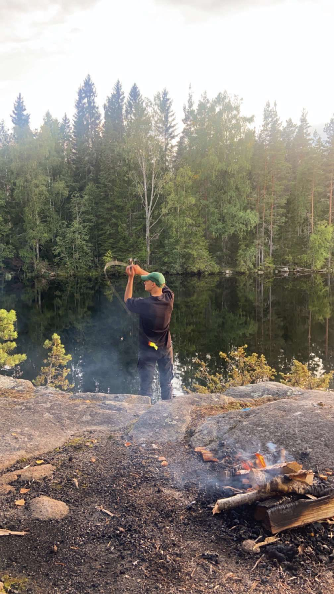

Om mig
Jag heter Linus, är 30 år och bor i Arvika. För närvarande studerar jag Frontendutveckling i Karlstad. Med min tekniska expertis och kreativa synvinkel trivs jag redan nu med att omvandla designkoncept till fungerande kodbaser.
När jag inte kodar, hittar du mig oftast fortfarande bakom skärmen pysslandes med något annat. Men jag spenderar också mycket tid på tennis och njuter av naturen när vädret tillåter.